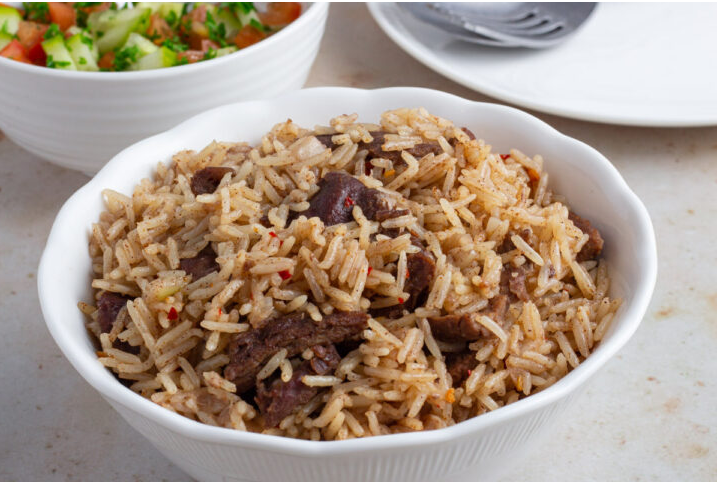
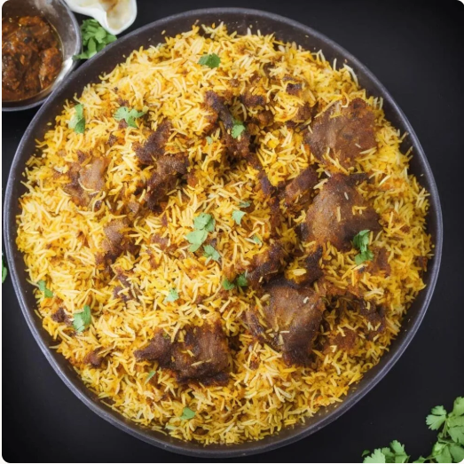
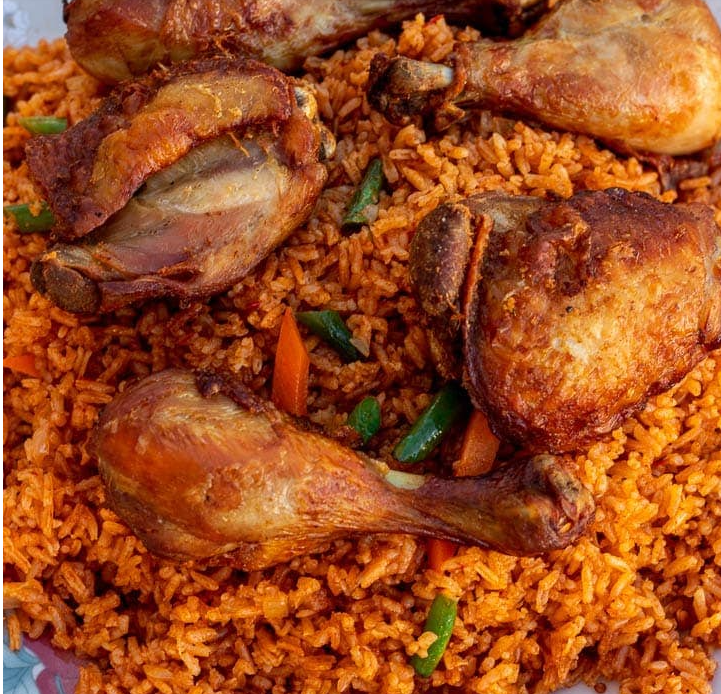

chakalaka
chakalaka is a south african rice dish made with veggies,tomatoes,beans ,rice and plenty of seasonings

In africa we have many rich cultures, and each culture is known for its unique languages,modes of dressing
but most importantly for their foods.In this section,we will explore we will explore the difrent ways africans cook their rice,lets gooooooo!!!
Many african communities have diffrent variations of how they cook their rice.Below is a list of some of the rice dishes:
pilau is cooked by mixing meat of your choice ,rice and spices
biriyani is a coastal rice dish made with meat of choice and caramelised onions
jollof rice is a west african rice dish
chakalaka is a south african rice dish made with veggies,tomatoes,beans ,rice and plenty of seasonings
is a popular west african dish coocked in a tomato based sause with various vegetables and spices